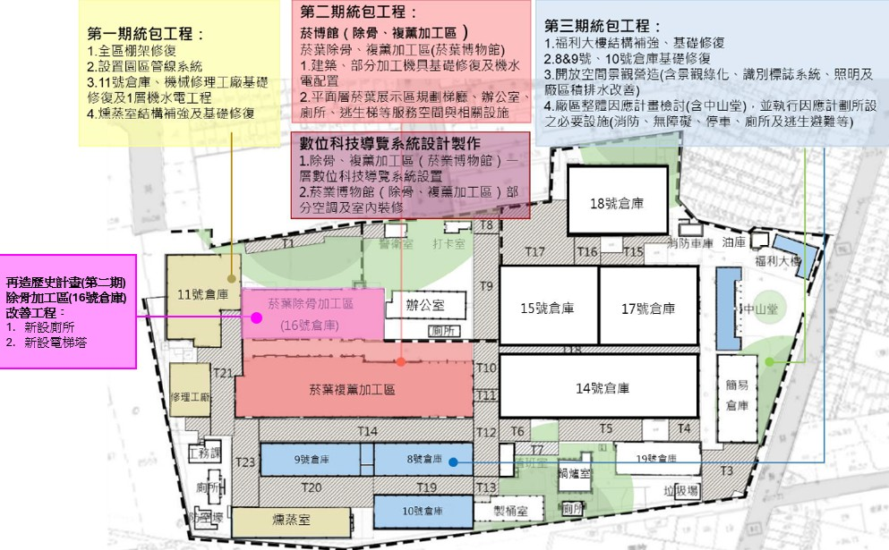

歷史建築修復工程採用統包模式之執行成效評估 –以屏東菸葉廠再造歷史現場計畫為例
李嘉欣
關鍵字：歷史建築; 統包模式; 再造歷史現場; 文化資產修復
摘 要
本研究旨在探討歷史建築修復工程採用統包模式（Turnkey）之執行成效與特性。研究以「屏東菸葉廠再造歷史現場計畫」為個案場域，運用質性研究之個案研究法，透過契約文件、工作報告書、會議紀錄及作者參與觀察進行文件分析與綜合評估，對比廠區內統包工程與傳統「設計-招標-施工」模式之差異。
研究結果顯示：在採購效率方面，統包模式能整合設計與施工，顯著減少分案招標次數與行政程序；在品質管理與施工界面爭議方面，統包模式與傳統模式並無顯著差異；在工期控制方面，統包模式雖具備「細部設計與施工併行」之制度優勢，然因細部設計審查與核定期程過長，致使縮短工期效益未完全發揮；最後，在預算掌握方面，統包工程因變更設計規範嚴謹且採總價承攬，其單位面積修復經費（7,423～19,151元/m²）顯著低於傳統模式工程（27,784元/m²），展現良好的成本節省效益。
屏東菸葉廠佔地約 4.2 公頃，自日治時期起見證專賣制度下的菸產業發展，保留完整建築空間與複薰機械設備，為屏東具指標性的工業遺產，並於 2017 年登錄為歷史建築。2018 年屏東縣政府爭取文化部「再造歷史現場計畫」3.2 億元經費，以提升採購效率、縮減工期與整合施工界面為考量，採取統包模式分期分區推動修復，並委託專案管理控管。
本研究以個案研究法與文件分析法，透過作者參與觀察與相關工作報告書、契約、工作報告書、會議紀錄等資料，對比廠區內統包工程與傳統模式之執行成效（採購效率、品質、工期、成本及施工界面）。研究限制結果難以直接推論至其他文化資產場域或業主，仍待後續研究補充。
依據文化資產保存法第3條歷史建築指歷史事件所定著或具有歷史性、地方性、特殊性之文化、藝術價值，應予保存之建造物及附屬設施。洪姿婕針對古蹟修復工程界面整合之主要修復問題為，各階段工作缺乏完整性，如設計單位未依修復或再利用計畫進行設計規劃、施工單位未根據規畫設計內容確實執行，導致連鎖性問題存在。然而，周春盛的研究採取統包模式進行古蹟修復工程，可降低資訊不對稱性之交易成本；歷史建築修復不像一般工程，在老舊建築物中進行修補，通常由施工廠商執行，倘以統包模式可降低設計單位與施工單位對於圖說及施工之不確定性，從而節省時間、人力及溝通協調成本。
統包(Turnkey)是由統包廠商負責工程的設計與施工，最後把鑰匙(key)交到(turn)業主手中 。依據政府採購法第24條機關基於效率及品質之要求，得以統包辦理招標，將工程或財物採購中之設計與施工、供應、安裝或一定期間之維修等併於同一採購契約辦理招標。且統包工程具有五大特點，分別為增進採購效率、提昇採購品質、縮減工期、預算易管控、降低界面爭議。
屏東菸葉廠佔地約4.2公頃，自日治時期即負責屏東菸區耕作技術指導、收購與加工貯存的工作。因臺灣施行禁菸政策、開放國外菸品競爭等因素，遂於2002年關廠。屏東縣政府於2017年時為完整其產業文化意義，將屏東菸葉廠全區擴大登錄為歷史建築；於2022年為「屏菸1936文化基地」，以博物館群之姿盛大開幕。
本計畫以歷史場域再造為精神、菸葉文化為軸線，以統包模式推動軟硬體建置。為提升採購效率與施工界面整合，硬體整備採取分期分區統包策略，分為一、二、三期統包工程，以及除骨加工區（16號倉庫）改善工程等傳統案；軟體部分則透過「展示暨數位科技導覽系統」運用廠區空間與既有機具建置數位導覽，兼顧歷史保存、開放空間共享與永續經營目標，本計畫修復再利用之分期分區規劃，如圖1。

圖1屏東菸葉廠再造歷史現場計畫分期分區規畫圖
(圖片來源：本研究整理)
本研究將以行政院公共工程委員會頒布之統包模式之工程進度及品質管理參考手冊(95年修訂版)，文中所述統包工程之特性增進採購效率、提升採購品質、縮減工期、預算易掌控及降低界面爭議之觀點，釐清本計畫項下各案執行成果。如表1所述，本計畫共有5案，其中有3案統包工程、1案勞務案、1案係為傳統工程案，詳細如表1。
提升採購效率的前提在於確保公平合理下，簡化不必要的行政流程，避免工程延宕。以採購公告次數而言，本計畫一、二、三期統包工程採購次數均高於傳統工程，其中無法決標因素，均屬於無人投標；主因為統包團隊認為要組成具有歷史建築修復專業的建築師及匠師團隊較困難，門檻高；，在周春盛研究中也認為統包團隊之設計及施工廠商須有相關合作實務經驗，對於未有協作經驗之新廠商具有進入障礙。在分案招標情形，對比傳統工程案，本計採統包工程方式，因不需另行發包設計案，確實大幅減少分案採購情形，減少公文往來等行政程序。
表1屏東菸葉廠再造歷史現場計畫各案統計表
| 案名 項目 | 屏東菸葉廠再造歷史現場計畫(一期統包工程) | 屏東菸葉廠再造歷史現場計畫(二期統包工程) | 屏東菸葉廠再造歷史現場計畫(三期統包工程) | 屏東菸葉博物館展示暨數位科技導覽系統設計製作案 | 屏東菸葉廠除骨加工區(16號倉庫)改善工程案 |
|---|---|---|---|---|---|
| 類型 | 統包工程 | 統包工程 | 統包工程 | 勞務(展覽統包) | 傳統工程 |
| 公告次數 | 3 | 3 | 5 | 2 | 2 |
| 決標日 | 108.07.09 | 108.07.09 | 109.03.31 | 109.08.20 | 110.05.24 |
| 開工日 | 109.05.08 | 109.05.08 | 109.10.23 | 110.05.03 | 110.06.11 |
| 開工準備天數 | 305日曆天 | 305日曆天 | 207日曆天 | 257日曆天 | 19日曆天 |
| 履約完成 | 110.01.16 | 110.03.04 | 110.09.17 | 110.12.29 | 111.01.05 |
| 工期 | 250日曆天 | 269日曆天 | 330日曆天 | 限期110.12.31前 | 135日曆天 |
| 契約金額 | 65,756,000元 | 95,719,000元 | 85,000,000元 | 27,099,675元 | 48,990,000元 |
| 結算金額 | 66,055,000元 | 95,842,366元 | 90,130,000元 | 29,420,740元 | 55,701,223元 |
| 契約變更 | 1次 | 2次 | 2次 | 1次 | 1次 |
| 樓地板面積 | 8899.21 m2 | 10530.19 m2 | 4706.36 m2 | 4421.83 m2 | 2004.83 m2 |
| 平均修復費 | 7,423元/ m2 | 9,102元/ m2 | 19,151元/ m2 | 6,654元/ m2 | 27,784元/ m2 |
| 查核成績 | 甲等 | 甲等 | 乙等 | 無 | 甲等 |
資料來源：本研究整理
本計畫一、二期統包工程及除骨加工區(16號倉庫)改善工程曾於工程查核取得甲等成績，反之三期統包工程曾於110年3月工程查核查列為乙等工程(75分)。因此，若以歷次查核成績來評估採購品質之提昇程度，則並無差異。
統包工程係由統包商統籌設計與施工，統包商可採細部設計核定後施工之方式，亦可採細部設計及施工併行作業方式進行縮減工期。然而，在本計畫當中，一期統包工程分三階段核定細部設計、二期及三期統包工程分二階段核定細部設計後旋即開工；反觀「屏東菸葉廠除骨加工區(16號倉庫)改善工程委託設計、監造及工作報告書案」於109年11月13日決標後，於110年5月24日發包工程案後110年6月11日旋即開工，開工前準備天數(含設計期程)約為211天。整體而言，本計畫雖採統包模式之細部設計及施工併行，惟設計審查核定期程過長，導致無縮減工期之成效。
統包工程特點之一為預算易於管控，主因統包模式之變更設計嚴謹，追加經費不易。以本計畫而言，若採結算金額除以樓地板面積來計算平均修復費用，則一期統包工程為7,423元/ m2，二期統包工程為9,102元/ m2，三期統包工程為19,151元/ m2；反之，除骨加工區(16號倉庫)改善工程案之平均修復費用為27,784元/ m2。整體而言，統包工程之平均修復經費較為節省。
在本計畫內各統包工程之現場界面爭議均能在專案管理廠商協助釐清疑義後排除界面爭議，惟因同一工區範圍內有多案同時併行施工情形，故針對工區範圍之界面如建物與棚架界面及機水電消防管路界面較多，如變電站預留管路銜接、配電盤及電力管路銜接、戶外消防管路銜接、園區內汙水處理設施管路銜接等界面。
本研究評估屏東菸葉廠再造歷史現場計畫發現，統包模式因總價承攬與變更設計嚴謹，單位修復經費顯著低於傳統工程，展現優異的預算控制效益；雖整合設計與施工簡化了招標流程，惟專業文化資產團隊組成門檻高易致前期流標，且倘設計團隊無法掌握業主需求，恐受限於審查核定冗長，致使縮短工期效益未完全發揮。此外，跨案界面仍極依賴專案管理廠商協調；建議未來宜適度放寬團隊資格並建立平行審查機制，以發揮統包最大效益。